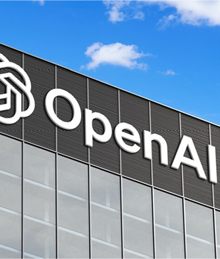

Il ruolo di OpenAI nello sviluppo dell’intelligenza artificiale
OpenAI è uno dei principali centri di ricerca sull’intelligenza artificiale a livello globale. Si occupa di sviluppare tecnologie avanzate capaci di avere un impatto positivo sulla società, puntando non solo a creare sistemi sempre più intelligenti, ma anche sicuri, affidabili ed eticamente responsabili, utilizzabili in diversi ambiti della vita quotidiana, dello studio e del lavoro.
L’intelligenza artificiale viene addestrata su grandi quantità di dati, come testi, libri, articoli e codice, imparando a riconoscere schemi, linguaggi e relazioni tra le informazioni. In una fase successiva interviene il contributo umano: le persone valutano le risposte generate dall’AI, correggono eventuali errori e aiutano a rendere il sistema più preciso, utile e coerente.